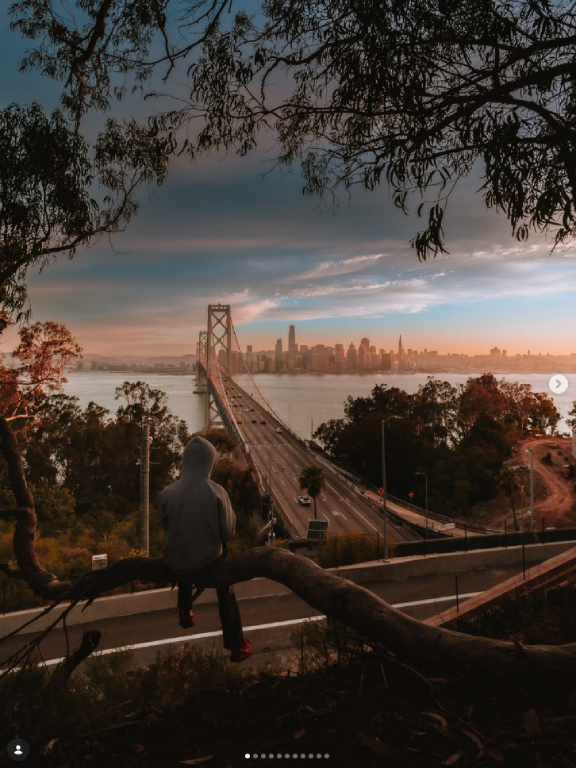
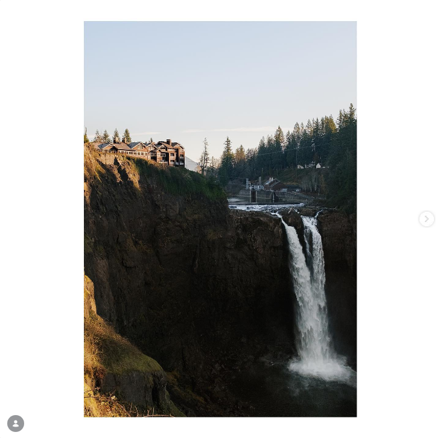
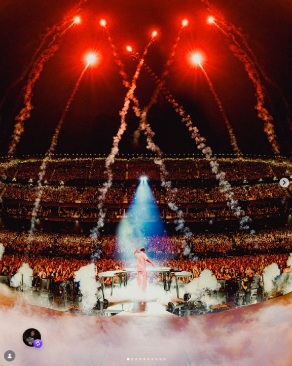

Matthew Evearitt was a teacher at Mercy High School before it permanently closed down. Matthew is a professional photographer and cinematographer. Matthew has given me a lot of inspiration to travel and take photos all around, and not only just in San Francisco. His artwork is very well captured and edited; you can see he’s done this for years and enjoys what he is doing.

Winston Lai is a photographer based in San Francisco. He started as a photographer in high school and is also slowly progressing to a videographer as well. I met Winston back in high school when he was a senior, and I was a freshman. I enjoy his artwork and his eye for perception in photography. He can make a simple photo look so majestic with his editing skills, but he also finds the perfect spots to take pictures, even if it means risking his life. I love his editing skills and the way his color tones for each post are different.

Illenium is a music artist who produces electronic dance music (EDM) and is a very famous artist who hosts shows at the Bill Graham Civic Auditorium occasionally.Illenium was the first EDM artist I listened to back when I was in high school. My sister introduced me to his music, and from then on, I have loved his music, and he will forever be my favorite EDM artist. His music is very melodic, and his artwork choices when he performs are very unique. He performs at the Las Vegas Sphere, and apparently he was a beast at it with his artwork.
Something that I learned that was very useful was the "target="_blank" will pop up a new tab instead of losing a tab which is very helpful. Another thing that I learned that was very cool was that you can have text and image AS a hyperlink too! I used a lot of breaks to seperate all my inspirations so it's easier to read and depart them all. Something I would change would be the background color in the CSS, but I didn't wanna tamper with it yet because I am still unfamiliar with color codes yet. Other than that I would want to try and put the hyperlink text in the center. I've done it before but I just forgot how to. What I don't like is I couldn't seperate my tags like the example videos. Everything is clumped up together.